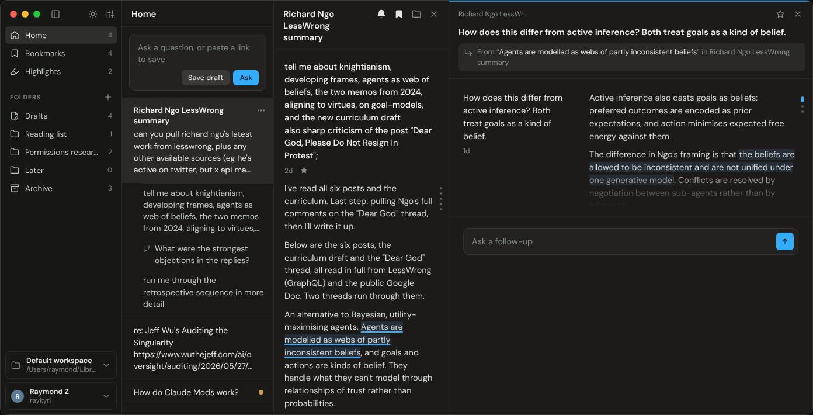
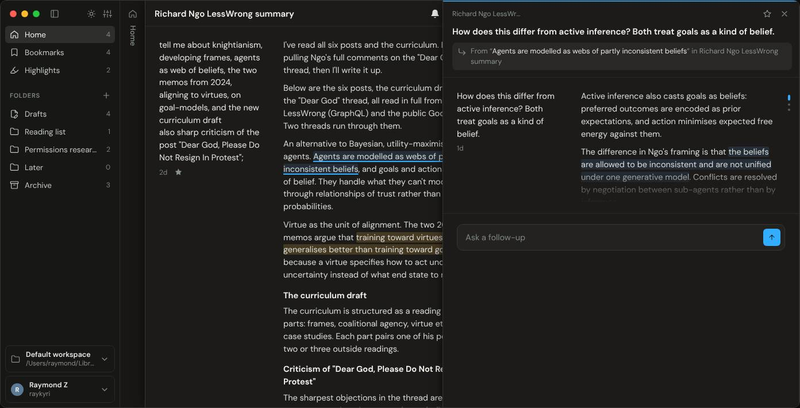
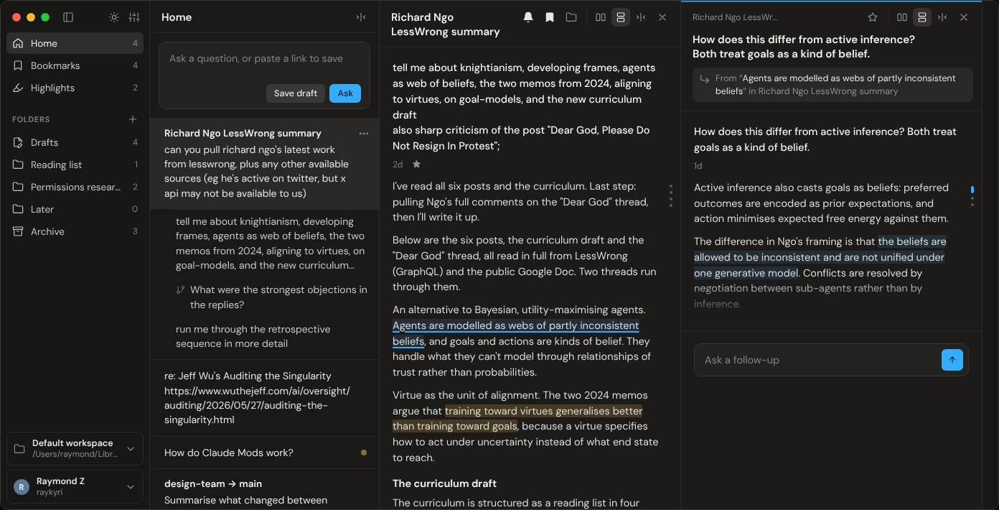
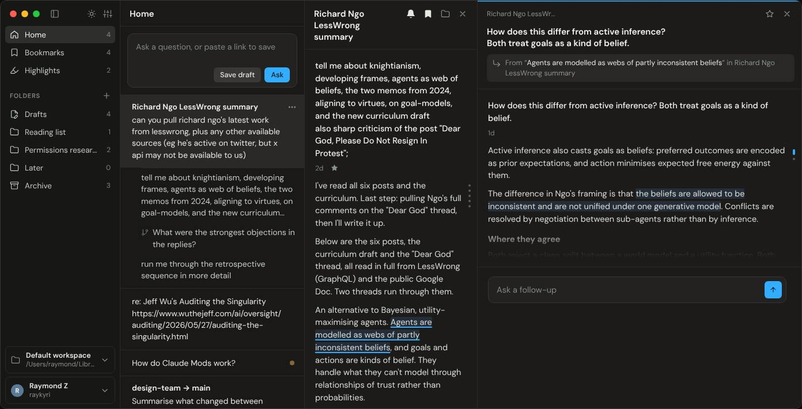
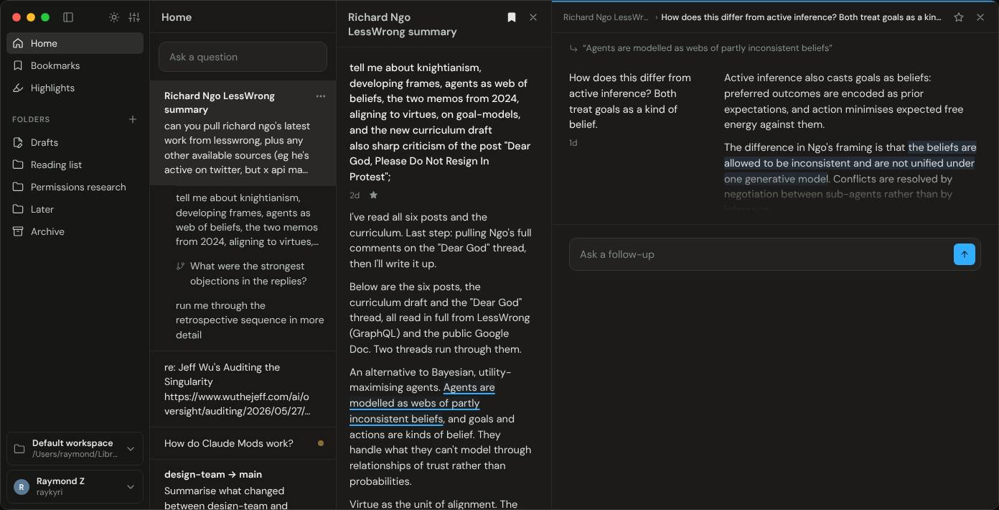
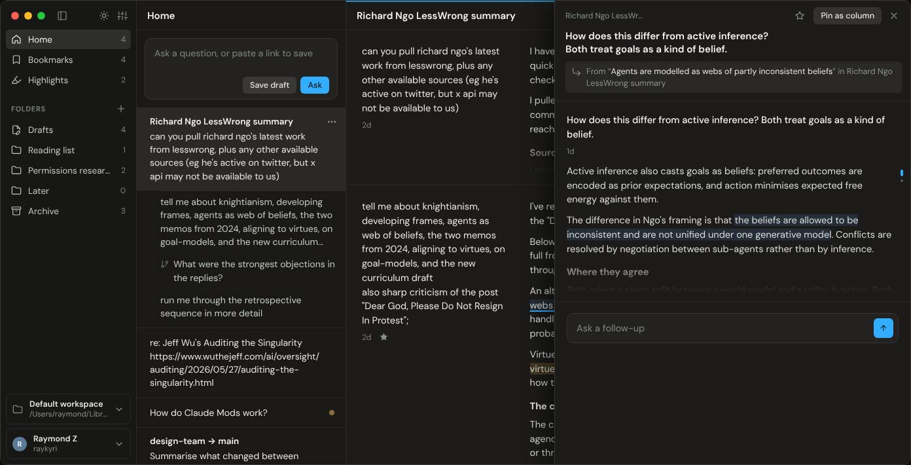

now
Current prototype

Focus stack. Widths are recalculated on every open, close and focus change.
Open the current prototypeFive variants of the current prototype, each built as its own interactive mockup. Each one targets the layout changes measured below. Screenshots show each mockup's default state at a 1440×900 viewport.
Measured with Playwright by recording each column's position and width after each click.
Combine A and D. In A, no column changes width or switches layout for any click in the test, at any viewport width. The only motion is the row scrolling to show the column you opened, and that motion is the expected result of the click. D removes six visible buttons and the duplicate titles without changing behaviour, so it applies on top of A.
Keep B's main idea as a rule for whichever layout is chosen: the turn layout (grid or stacked) is a setting of the column, not a result of its width. B's three header buttons per column add the controls this pass is trying to remove, so leave them out unless people ask for narrow columns. C still resizes columns when a nested branch opens. E keeps the parent still but covers the passage the branch came from.

Focus stack. Widths are recalculated on every open, close and focus change.
Open the current prototype
Feed 320px, every conversation 620px, always the grid. The row scrolls horizontally, and earlier columns slide under later ones with a 44px strip and a vertical title. Opening a branch appends it and scrolls it into view. Clicking a strip scrolls back to that column.
Open candidate A
Each conversation column is side by side (720px), stacked (420px) or collapsed (44px), and only header buttons change it. New branches open stacked. Columns that don't fit scroll horizontally without overlapping.
Open candidate B
Questions are always above answers, so a width change only rewraps text. Focus no longer changes widths, and the feed stays 320px. Widths are still recalculated when columns open or close.
Open candidate C
Same layout as now. Branch header is one breadcrumb row; the source passage is one line at the top of the column. Root header actions appear on hover. Marks outside the focused column are fainter. Length dots appear on hover. The feed composer is one line until focused. Sidebar counts are removed.
Open candidate D
Branches open in a drawer over the right side of the conversation. The feed and parent keep their width, layout and scroll position. Nested branches replace the drawer's content. "Pin as column" turns the branch into a fixed 560px column.
Open candidate E| Candidate | Focus a column | Open a branch | Open a nested branch | Grid ↔ stacked switch | Main cost |
|---|---|---|---|---|---|
| Current | Swaps widths | Feed and parent shrink | 3 columns resize or collapse | Automatic, by width | Hard to predict |
| A. Stacked scroll | No change | Row scrolls right | Row scrolls right | Never (always grid) | At 1440 about 520 of the parent's 620px show beside a branch; reaching earlier columns takes a scroll or a strip click |
| B. Manual modes | No change | Row scrolls if needed | Row scrolls if needed | Only by header buttons | Three more buttons per header; at the end of the row there is empty space |
| C. One layout | No change | Parent narrows, layout stays | 2–3 columns resize | Never (always stacked) | Loses the side-by-side grid; long questions push answers down |
| D. Calm chrome | Swaps widths | As now | As now | As now | Follow and Move are hidden until hover; light-theme tints get very faint |
| E. Branch drawer | No change | Nothing moves | Drawer content changes | Never for the parent | Drawer covers the parent's answers, including the source passage |
Each candidate ran the prototype's regression script (no page errors, no horizontal overflow at 360px) and a click-through at viewports of 1100, 1440 and 1900px in light and dark. The click-through focuses the parent, focuses the branch, opens a nested branch and closes it, recording each column's position and width after each step. Each mockup's Design notes tab starts with a "This candidate" section, and its Review log lists the changes.